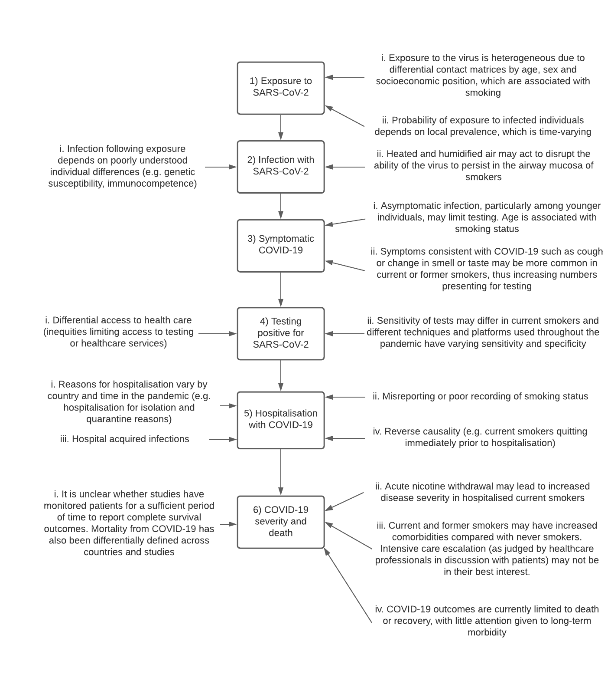

Smoking and COVID-19.
Since March 2020 I have also been involved in a project investigating the association of smoking and SARS-CoV-2 infection, and COVID-19 severity and mortality. This work has been led by Olga Perski and colleagues at UCL-Tobacco and Alcohol Research Group.
Current and former smoking is associated with worse outcomes and increased rates of hospitalisation from respiratory infections such as Respiratory Synciatial Virus, Influenza viruses and bacterial infections. Because of this there was an early concern about how the pandemic caused by SARS-CoV-2 may interact with smoking.
Early data released from healthcare services in China in the early parts of 2020 suggested that smoking was not a significant risk factor for COVID-19 disease. Whether this was a true effect or reflected poor recording or reporting was unclear. We began to synthesise the published and pre-print literature to investigate the specific association of smoking and COVID-19. This was initially performed as a report for the Royal College of Physicians, London and was expanded following a request from Public Health England.
Initial report
During the early stages of the SARS-CoV-2 epidemic several physiological characteristics (i.e. male) and medical co-morbidities (i.e. hypertension and cardiovascular disease) were suspected to have an increased association with adverse outcomes. There was little evidence on the effect of smoking or tobacco use. We wrote a blog post to summarise the current evidence and performed a rapid review of the evidence for the Royal College of Physicians, London (Simons, Perski, and Brown 2020; Simons et al. 2020). This work evolved into a living review.
Exploring the association of smoking and COVID-19
Epidemiological data was rapidly produced during the early stages of the SARS-CoV-2 pandemic. To be able to incorporate this data into our analysis on the association of current- and former-smoking on the risk of SARS-CoV-2 infection, COVID-19 disease severity and mortality we adopted a living review approach where we screened the literature at regular intervals to identify sources of information. Initial reports were posted as pre-prints with Version 7 of the review published in the journal Addiction (Simons et al. 2021a). During this process we changed from a classical statistical approach to Bayesian analysis to account for updating information as well as allowing us to incorporate prior evidence from previous versions of the review. We continued to update this analysis to Version 12 which was completed in August 2021 (Simons et al. 2021b).
We spent a large amount of time considering the issues with interpreting observational data through a causal lens. The main challenges are highlighted below. We wrote a commentary on the level of evidence we believed would be important to consider to truly understand the association of smoking and this disease (Perski et al. 2021).

We also reviewed clinical case notes from University College London Hospital to compare rates of hospitalisation for COVID-19 compared to other viral illnesses for current- and former-smokers (Simons et al. 2022).
We planned to analyse the Office for National Statistics COVID infection survey dataset to gain further evidence on the association of smoking and SARS-CoV-2 infection. The protocol has been deposited on the OSF (Perski 2021). This work has been put on hold as we are now not based in the UK although we hope that this work will be taken up.